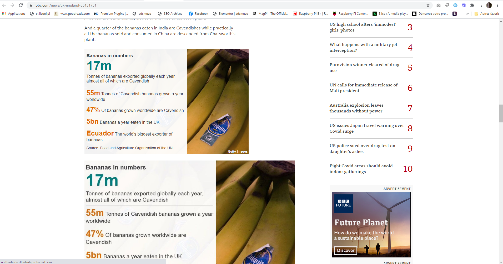

Cognitive flow about bananas
Banana to banana link can give birth to great things and ideas and why not great human leaders.

This picture below

remembered me about this third party application project that will be soon deployed, it is this third party application that will support journalists, bloggers and every online content writers get instantly quantitative facts about the thing there are writing about. Seeing the picture remembered how the brain process information while yelling at me that it is a long time that I have said anything about cognitive science so I just decided to write about this cognitive process that happened to my mind. But curiously it is about banana and I sincerely planned to write a Thank You article about this article titled Code word as the 5th sample of this new concept of blogging by writing about another article and linking to it as I have done with these articles (this, this and this.), something that could be seen as one of these tricks for search engines but is just an exercise and a way of telling about who and what you are caring about while learning to be a good writer. As I do often I postponed it like I postponed the article about this software engineer I was talking about in this article. Let me tell you that when I saw this picture above it also reminded me of this picture below
While searching this picture of this software engineer with this banana in her car while she is driving I remembered how hard it is to just highlight something with now a day digital platforms that are so widely used and owned by so rich and powerful companies. I thought why I could not just take right there the start point and the end entry of this video I would highlight instead of embedding the whole video right there. Because I think is more useful for the readers and the content publishers and believe that if it is like that it will also benefit more the producer of the content highlighted.
But let me be sincere with you because it is just after writing this paragraph above that I have learned that I could do what I was ranting about youtube because just below the share popup there is this “start at” button that let me pick the start time I need. So I was just ignorant and never used this feature that I thought should be implemented by youtube so what I was willing is there
but once embedded it is not the thumbnail I need what I need is this frame with the banana because this article is about a cognitive process that’s started from a banana picture. the thumbnail should be this picture below
But anyway because engineering third-party services are not difficult at all and it is another one to build for ……. a project that tries to disrupt how we produce and consume online content with third-party web services that will make websites better, richer and smarter.
Forgive me this way out of the topic of this article which is about describing a cognitive flow that started with this picture
the picture made me remember that when I saw the video fo this software engineer jumping into her car and starting eating a banana while driving how Clayton Christensen was right there is some kind of peculiar food products for car drivers. It seems that we like consuming some foods while we are driving cars this is clearly a food business market segment for the food business industry that’s led to mac Donald drive but some food tech startups could exploit this segment because car manufacturers and the food industry seem to not care about this segment way extensible to be the most important segment of this market
What’s curious for me is that I consumed this picture about banana by reading this article about industrial scale
Google will probably rank this for the keyword banana because they are a lot of banana out there and in this article but I amazed to learn today how bananas are important for the world, how they could benefit countries mainly African countries (ivory cost is an example for economic exploitation of banana) and how it is now menaced. Hope I will know more about it.
These were just some mind spots of a less than one-minute cognitive process that was triggered by this picture
PS : while writing this article I remembered that having a self article management of named it knowledge management if you want is useful because I need to get the link of one of my article that highlight the interesting projects and word about third party engineering that I have already written about because while being an article about the cognitive flow I experienced this was also about third party web services because this article started from this picture below
that remembered me these web widgets that automatically embed themselves in web content enriching them with quantitative facts
But I may do it later on here is a screenshot of a part of this article with this code word embed…..